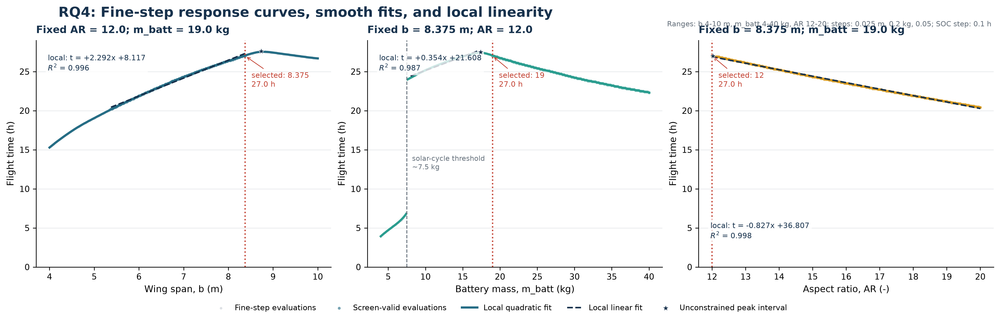

01 / Computational modeling / Yuanpei project
More energy.
More weight.
Does a bigger battery always mean a longer flight?
The question
A battery stores energy, but an aircraft must also carry it. I wanted to understand how those competing effects change endurance—and how the answer shifts when the rest of the design changes.
This investigation uses a computational model rather than a flight-tested aircraft. Its results describe the modeled conditions.
Building the model
I developed coupled models of mass, aerodynamics, solar-energy input, and battery state of charge, and wrote the Python modeling code. The project combined a 45,325-design parameter sweep with finer validation and sensitivity analysis.
I co-designed the original procedural implementation. AI assisted with some optimization, debugging, and language editing; the final codebase should not be described as entirely independently designed.
Reading the trade-off

The response is not a simple rule that more battery always produces more flight time. Extra stored energy and the cost of carrying additional mass interact with the solar cycle.
The project summary reports a peak of 27.5 hours across this sweep, compared with 27.0 hours among designs passing the empty-fraction screening constraint. A raw maximum is not automatically an acceptable design.
Download the plotted data ↓Source: August 2, 2026 fine-step export. Columns: battery_mass (kg), flight_time_fine (hours), empty_fraction_ok (screening flag). The line connects sampled outputs, not a validated prediction between samples.
What the results can tell us


Endurance optimization requires considering the whole coupled system. Improving one component in isolation can introduce costs elsewhere.
These are model outputs under particular assumptions, not demonstrated flight durations. Physical testing and validation of the assumptions would be necessary before treating them as aircraft performance claims.
Project record
This is a course research project, not a peer-reviewed publication. The contribution summary follows the September 2026 project record; the graph is drawn directly from the archived numerical export.
Home